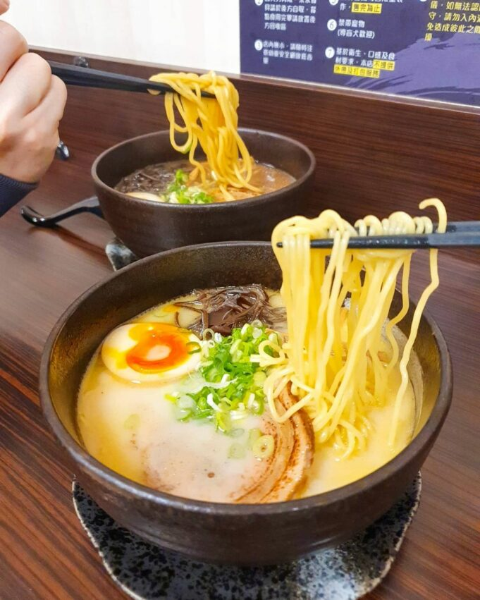

晚上來一碗熱騰騰拉麵暖心又暖胃、吃飽更好睡！
森拉麵是一間平價拉麵店，有豚骨、味噌、醬油等經典湯頭，還有多種配料可以加料，叉燒、糖心蛋、蔥、筍乾擺放在濃郁的湯頭上
如果是蔥愛好者的話，一定要加爆青蔥，滿滿的蔥超誘人，都快要看不見麵跟其他配料了。
地址：高雄市三民區鼎山街418號
營業時間：18:00–01:00 (週二休息)

高雄美食介紹 高雄美食｜早餐、早午餐 高雄美食｜美食小吃 高雄美食｜下午茶、咖啡廳 期末心得
練習用音樂、影片
your drowser does not support the audio element.